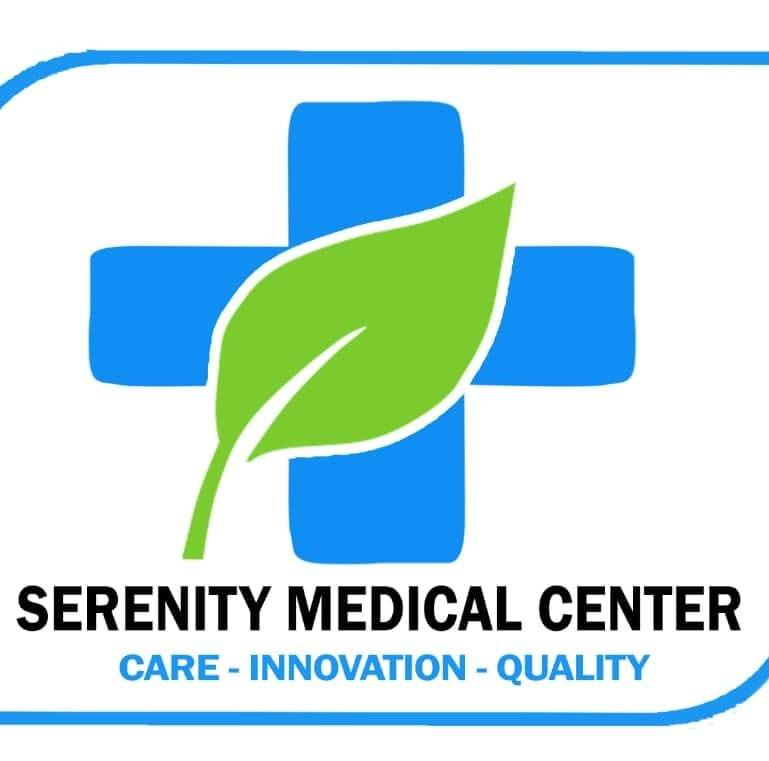

Prescription guidance
Understand prescribed medicines, directions and the questions to raise with your clinical team.

SerenityMEDICAL CENTERPractical medication support that helps patients understand prescriptions, use medicines responsibly and stay connected to their care.
Medicines are an important part of many treatment plans. Serenity's pharmacy support is designed to make medication-related questions, instructions and next steps easier to understand.
Whether you need clarification about a prescription or guidance on what to do next, our team can help connect medication needs with the wider clinical journey.
Good medication support is about more than access. It is also about understanding how prescribed medicines fit into your care.
Understand prescribed medicines, directions and the questions to raise with your clinical team.
Receive practical explanations that help make medication instructions easier to follow.
Keep medication-related needs organised as your treatment plan continues.
Ask before changing, combining or stopping medicines and follow professional advice.
A simple pathway helps patients understand what has been prescribed, how to use it and when to seek further guidance.
Know what the medicine is for and what your care team has advised.
Clarify directions, timing and practical questions before you begin.
Follow the prescribed instructions and avoid making changes without advice.
Raise concerns, side effects or questions with an appropriate professional.
Medication can feel complicated. Clear explanations, responsible use and an easy route back to the care team can make the experience more reassuring.
For medication questions or service enquiries, contact the Serenity team in Yaoundé.